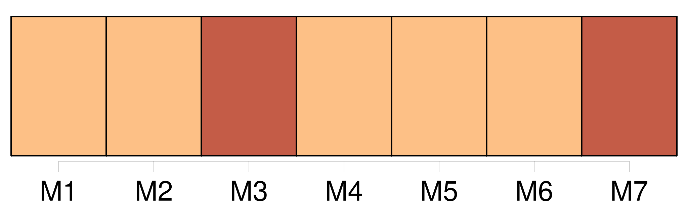
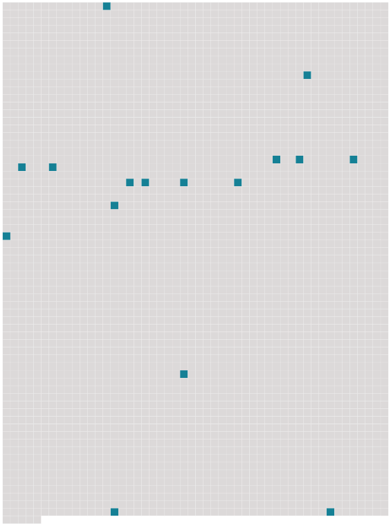

Longueur nb maillons : 16 mentions |
  |
Ma jambe était en effet glacée par un de ces vents coulis qui [vous] gèlent une moitié du corps tandis que l’ autre éprouve la chaleur moite des salons, accident assez fréquent au bal. [31 phrases] Avez [-vous] jamais rencontré de ces femmes dont la beauté foudroyante défie les atteintes de l’ âge, et qui semblent à trente-six ans plus désirables qu’ elles ne devaient l’ être quinze ans plus tôt?? [19 phrases] Pourvu que la haute société sache le chiffre de [votre] fortune, [vous] êtes classé parmi les sommes qui [vous] sont égales, et personne ne [vous] demande à voir [vos] parchemins, parce que tout le monde sait combien peu ils coûtent. [3 phrases] Les observateurs, ces gens qui tiennent à savoir dans quel magasin [vous] achetez [vos] candélabres, ou qui [vous] demandent le prix du loyer quand [votre] appartement leur semble beau, avaient remarqué, de loin en loin, au milieu des fêtes, des concerts, des bals, des raouts donnés par la comtesse, l’ apparition d’ un personnage étrange. [6 phrases]
Et [vous] me taxerez peut-être de folie, mais je ne saurais m’ empêcher de penser que mon voisin, ce monsieur vêtu de noir qui vient de partir, causait ce froid. [5 phrases] Des romanciers racontaient la vie de ce vieillard, et [vous] donnaient des détails véritablement curieux sur les atrocités commises par lui pendant le temps qu’ il était au service du prince de Mysore. [35 phrases] bien, voyez [-vous] comme la société est mêlée ici. [38 phrases] [Vous] eussiez dit de deux os mis en croix sur une tombe. Un sentiment de profonde horreur pour l’ homme saisissait le cœur quand une fatale attention [vous] dévoilait les marques imprimées par la décrépitude à cette casuelle machine. |
 |
La ressource peut être téléchargée sur la page Ortolang
Si vous avez des questions ou vous voyez des erreurs, merci d'envoyer un mail à silvia.federzoni89@gmail.com
Site développé par S. Federzoni (contact)